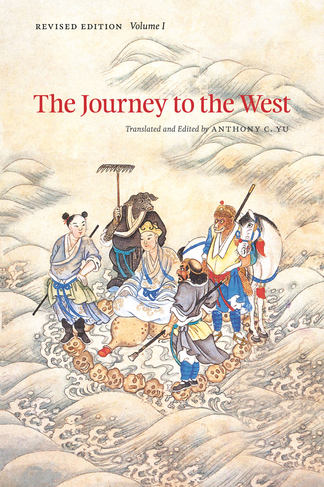
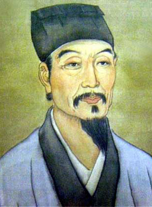
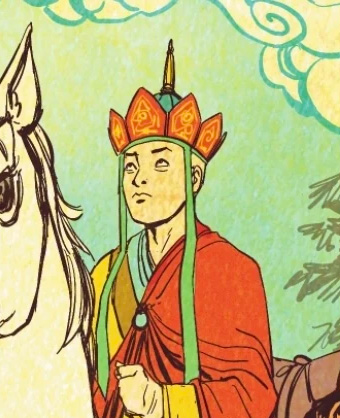
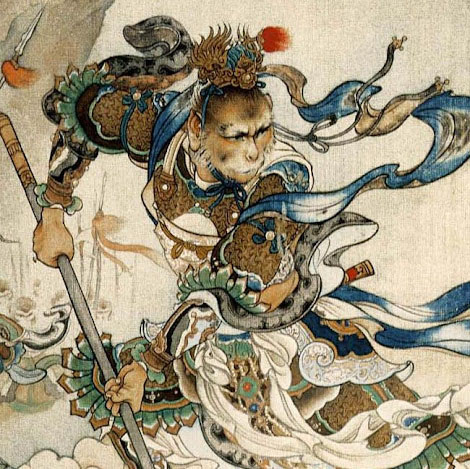
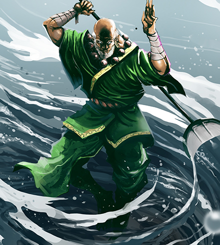
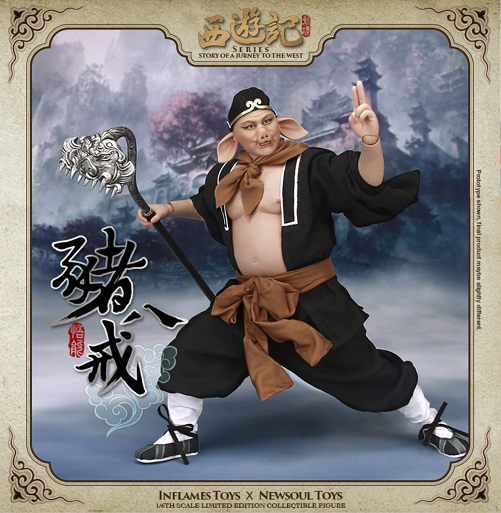

- 
-
Plot Summary
Journey to the West is a Chinese fantasy novel published in the 16th century during the Ming dynasty and attributed to Wu Cheng’en. It is regarded as one of the greatest Classic Chinese Novels, and has been described as arguably the most popular literary work in East Asia. Arthur Waley’s abridged translation, Monkey, is known in English-speaking countries.
The novel is an extended account of the legendary pilgrimage of the Tang dynasty Buddhist monk Xuanzang, who traveled to the “Western Regions” (Central Asia and India) to obtain Buddhist sacred texts (sūtras) and returned after many trials and much suffering. The monk is referred to as Tang Sanzang in the novel. The novel retains the broad outline of Xuanzang’s own account, Great Tang Records on the Western Regions, but adds elements from folk tales and the author’s invention: Gautama Buddha gives this task to the monk and provides him with three protectors who agree to help him as an atonement for their sins. These disciples are Sun Wukong, Zhu Bajie, and Sha Wujing, together with a dragon prince who acts as Tang Sanzang’s steed, a white horse. The group of pilgrims journeys towards enlightenment by the power and virtue of cooperation.
-
Wu Cheng'en
Wu was born in Lianshui, Jiangsu province, and later moved to Huai’an. Wu’s father, Wu Rui, had had a good primary eduwcation and “shown an aptitude for study”, but ultimately spent his life as an artisan because of his family’s financial difficulties. Nevertheless, Wu Rui continued to “devote himself to literary pursuits”, and as a child, Wu acquired the same enthusiasm for literature—including classical literature, popular stories, and anecdotes.
He took the imperial examinations several times in attempt to become a mandarin, or imperial official, but never passed, and did not gain entry into the imperial university in Nanjing until middle age; after that he did become an official and had postings in both Beijing and Changxing County, but he did not enjoy his work, and eventually resigned, probably spending the rest of his life writing stories and poems in his hometown. During this time he became an accomplished writer, producing both poetry and prose, and became friends with several prominent contemporary writers. However, Wu remained poor throughout his life and did not have any children. Dissatisfied with the political climate of the time and with the corruption of the world, he spent much of his life as a hermit. - 
Characters
- 
-
Tang Sanzang
Tang Sanzang is based on the historical Buddhist monk Xuanzang. He is also widely known by his courtesy name, Tang Seng, or Sanzang.
The title Sanzang refers to his mission to seek the Sanzangjing, or the “Three Collections of (Buddhist) Scriptures”. In some English translations of Journey to the West, the title is rendered as Tripitaka which is the original Sanskrit term for the Sanzangjing. His name Tang Sanzang reflects his status as an oath brother of Emperor Taizong of the Tang dynasty. - 
-
Sun Wukong
Sun Wukong, also known as the Monkey King, is a fictional character and the main protagonist of the classic Chinese novel Journey to the West. He is a monkey born from a stone who acquires supernatural powers through Taoist practices. He is a trickster and a rebel who travels with Tang Sanzang to the West in search of Buddhist sutras. He is one of the Four Great Kings of Heaven, and is also known as the “King of Monkeys”.
- 
-
Sha Wujing
Sha Wujing, also known as the Sand Demon, is a fictional character and one of the main protagonists of the classic Chinese novel Journey to the West. He is a sand demon who acquires supernatural powers through Taoist practices. He is a trickster and a rebel who travels with Tang Sanzang to the West in search of Buddhist sutras. He is one of the Four Great Kings of Heaven, and is also known as the “King of Sand”.
- 
-
Zhu Bajie
Zhu Bajie, also known as the Pig Demon, is a fictional character and one of the main protagonists of the classic Chinese novel Journey to the West. He is a pig demon who acquires supernatural powers through Taoist practices. He is a trickster and a rebel who travels with Tang Sanzang to the West in search of Buddhist sutras. He is one of the Four Great Kings of Heaven, and is also known as the “King of Pigs”.
Adaptations
The Monkey Sun (Opičák Sun), a 1984 production adapting several chapters from the novel by the Theatre Esence in Prague, Czechoslovakia.
The Cave of the Silken Web, or Pan Si Dong, a 1927 silent adaptation of one chapter of the novel. It was followed by a 1930 sequel, The Cave of the Silken Web II (alternatively known as Spiders II).
Princess Iron Fan, a 1941 liberal adaptation of a short sequence from Journey to the West; the first Chinese animated feature film.
“The God of High School”, a Korean manga/game, with protagonist Jin Mori as the Monkey King Sun Wukong.
Dragon Ball was initially inspired by Journey to the West. For example, Sun Wukong (pronounced Son Gokū in Japanese) becomes “Son Goku”, who wields an elongating staff weapon, can fly using a magic cloud and has the ability to change into a giant ape. The supporting character Oolong was also based on Zhu Bajie and it was said that Yamcha was based on Sha Wujing. The object of sutras are replaced by the seven “Dragon Balls” and the dragon “Shen Long” who appears from the Dragon Balls to grant a wish. The first arc is a loose adaptation of Journey to the West, while following arcs diverge and tell original stories.